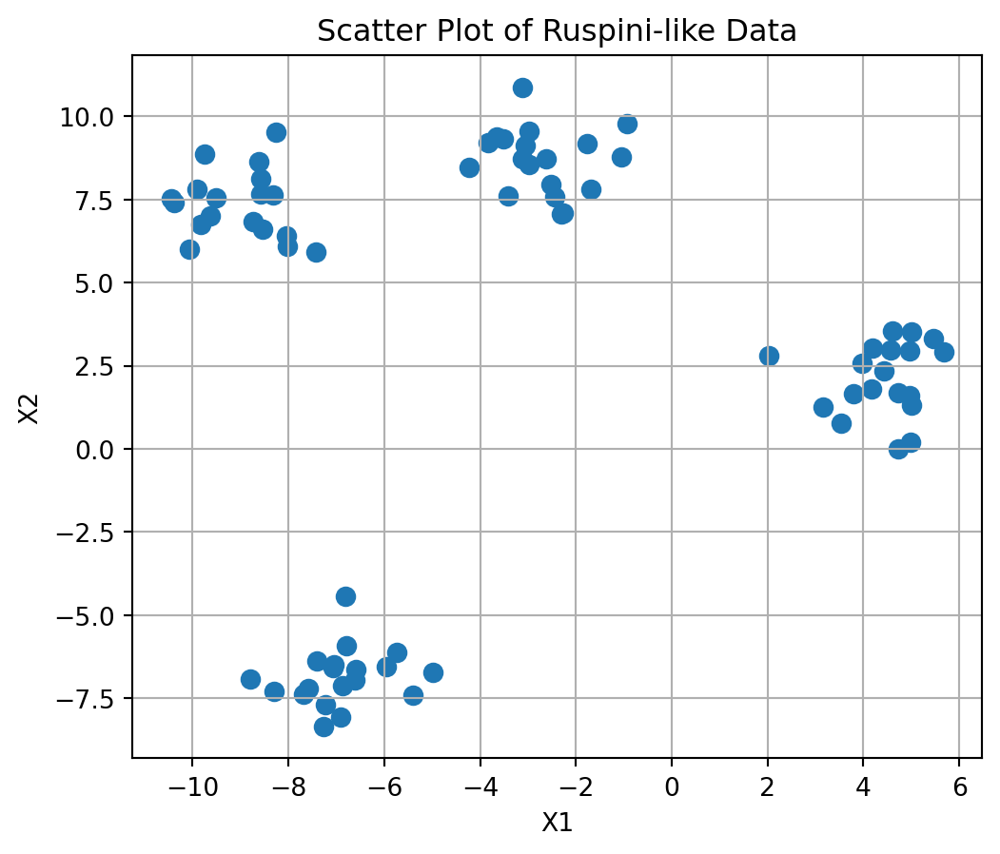
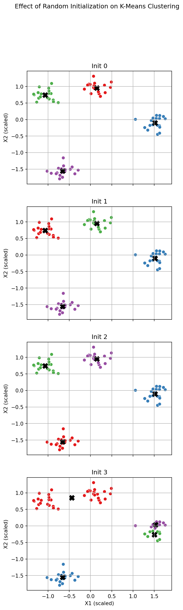
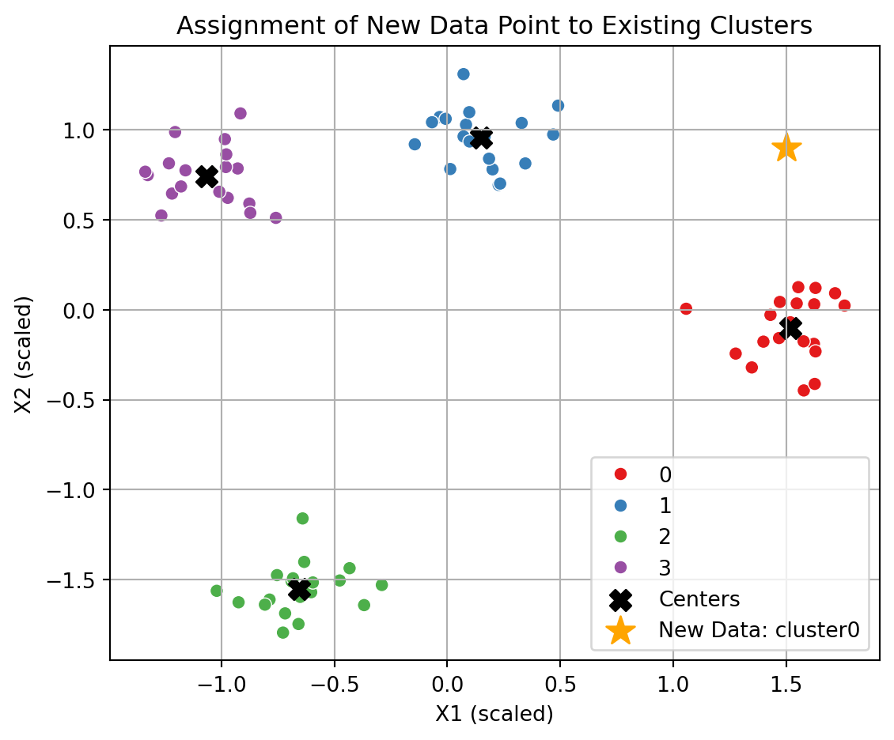

Cluster analysis, or clustering, is a fundamental unsupervised data mining task that discovers natural groupings in data without using external labels. The goal is to assign objects to clusters such that items within the same cluster are more similar to each other than to items in other clusters.
This section introduces K-Means, a classic partition-based clustering technique that partitions a dataset into \(k\) clusters by minimizing within-cluster variance (typically under Euclidean distance). Despite its simplicity, K-Means is an excellent vehicle to illustrate:
Centroid-based partitioning and iterative refinement
Sensitivity to random initialization (and how it affects solutions)
Practical visualization patterns (scatter plots and arranged plots)
How a trained K-Means model assigns clusters to new observations
19.1 Data Preparation
19.1.1 Data Generation
We will use a small, well-separated synthetic dataset (75 observations, 4 well-separated clusters) to make the mechanics of K-Means easy to see.
A simple scatter plot provides intuition about potential cluster structure and helps motivate a choice of k. You should see four visually distinct groupings—an ideal sandbox for demonstrating K-Means behavior.
# Scatter plot of the generated datafig, ax = plt.subplots(figsize=(6, 5))ax.scatter(df['X1'], df['X2'], s=50)ax.set_title("Scatter Plot of Ruspini-like Data")ax.set_xlabel("X1")ax.set_ylabel("X2")ax.grid(True)plt.show()

19.1.2 Scale the Data
Typically, K-Means relies on Euclidean distance, which is sensitive to scale of data because variables measured on larger scales can dominate the clustering process, leading to biased or misleading group assignments. So, it is still a good practice to normalize or standardize data before clustering. This practice becomes essential when variables have very different units or magnitudes (e.g., “income in dollars” vs. “age in years”).
In this example, apply z-score standardization, which rescales each feature to have a mean \(\bar{x}=0\) and a standard deviation \({s}=1\):
\[
z = \frac{x - \bar{x}}{s}
\]
This transformation ensures that the K-Means algorithm treats all variables fairly in distance-based computations.
from sklearn.preprocessing import StandardScaler# Initialize the standard scalerscaler = StandardScaler()# Fit and transform the datasetdf_scaled = pd.DataFrame( scaler.fit_transform(df), columns=df.columns, index=df.index)# Summary statistics after scalingdf_scaled.describe()
X1
X2
count
7.500000e+01
7.500000e+01
mean
1.450691e-16
-1.421085e-16
std
1.006734e+00
1.006734e+00
min
-1.337654e+00
-1.794189e+00
25%
-8.401175e-01
-8.042028e-01
50%
-1.440913e-01
1.252748e-01
75%
7.742190e-01
8.130745e-01
max
1.759130e+00
1.309245e+00
19.2 K-Means Clustering
K-Means is one of the most widely used clustering algorithms. It partitions the dataset into a predefined number of clusters, \(k\), such that each data point belongs to the cluster with the nearest mean (called the centroid). The goal is to minimize the total within-cluster variance (also known as the inertia).
In Python, K-Means is implemented in the scikit-learn library via the KMeans class.
To run the algorithm, you need to specify two main inputs, data and the number of clusters (centers), \(K\). For example, let’s apply K-Means to the processed dataset using \(K=4\) clusters:
from sklearn.cluster import KMeans# Set number of clustersK =4kmeans_model = KMeans(n_clusters=K, random_state=2024)res_km = kmeans_model.fit(df_scaled)res_km
KMeans(n_clusters=4, random_state=2024)
In a Jupyter environment, please rerun this cell to show the HTML representation or trust the notebook. On GitHub, the HTML representation is unable to render, please try loading this page with nbviewer.org.
KMeans(n_clusters=4, random_state=2024)
NoteHow to turn off the warning
You may see two warning messages:
C:\Users\saaan\anaconda3\envs\buda_py311\Lib\site-packages\joblib\externals\loky\backend\context.py:136: UserWarning:
Could not find the number of physical cores for the following reason:
[WinError 2] The system cannot find the file specified
Returning the number of logical cores instead. You can silence this warning by setting LOKY_MAX_CPU_COUNT to the number of cores you want to use.
File "C:\Users\saaan\anaconda3\envs\buda_py311\Lib\site-packages\joblib\externals\loky\backend\context.py", line 257, in _count_physical_cores
cpu_info = subprocess.run(
^^^^^^^^^^^^^^^
File "C:\Users\saaan\anaconda3\envs\buda_py311\Lib\subprocess.py", line 548, in run
with Popen(*popenargs, **kwargs) as process:
^^^^^^^^^^^^^^^^^^^^^^^^^^^
File "C:\Users\saaan\anaconda3\envs\buda_py311\Lib\subprocess.py", line 1026, in __init__
self._execute_child(args, executable, preexec_fn, close_fds,
File "C:\Users\saaan\anaconda3\envs\buda_py311\Lib\subprocess.py", line 1538, in _execute_child
hp, ht, pid, tid = _winapi.CreateProcess(executable, args,
^^^^^^^^^^^^^^^^^^^^^^^^^^^^^^^^^^^^^^^
C:\Users\saaan\anaconda3\envs\buda_py311\Lib\site-packages\sklearn\cluster\_kmeans.py:1419: UserWarning:
KMeans is known to have a memory leak on Windows with MKL, when there are less chunks than available threads. You can avoid it by setting the environment variable OMP_NUM_THREADS=1.
You can avoid the first message (although it would appear only one time at the first use), before .fit() for the KMeans class, by running the following as instructed in the warning message:
import osos.environ['OMP_NUM_THREADS'] ='1'
But, you will still have the second warning message, whenever you run the KMeans. You can suppress such warning messages at the Python level in all the following codes by running the following setting1:
import warningswarnings.filterwarnings("ignore")
19.2.1 Cluster Summary Information
The K-Means clustering algorithm assigns the first three users to one cluster and the last three users to the second cluster. The results are consistent with our expectation. We can also display the centroid for each of the two clusters.
After fitting the K-Means model, the resulting KMeans object stores several useful attributes that provide insight into the structure and quality of the clustering solution.
Each centroid represents the mean position of all observations belonging to that cluster.
For cluster variance decomposition, the total, within-, and between-cluster sum of squares can be obtained as follows:
# Total sum of squares (TSS)dat = df_scaled.to_numpy() # for a sake of calculationoverall_mean = np.mean(dat, axis=0)totss = np.sum( (dat - overall_mean)**2 )# Within-cluster sum of squares (WSS) = inertia (sum of squared distances to the nearest cluster center)withinss = res_km.inertia_# Between-cluster sum of squares (BSS)betweenss = totss - withinss# Print metricsprint(f"Total Sum of Squares (TSS):\t{totss:.2f}")print(f"Within-cluster SS (WSS): \t{withinss:.2f}")print(f"Between-cluster SS (BSS): \t{betweenss:.2f}")
Total Sum of Squares (TSS): 150.00
Within-cluster SS (WSS): 3.92
Between-cluster SS (BSS): 146.08
19.2.2 Initialization
The performance and stability of K-Means depend heavily on how the initial cluster centers are chosen. That is, different initialization strategies can lead to different final clusters, even when using the same dataset and parameters.
To control how the initial centroids are selected, you can set the parameter init of KMeans.
init='k-means++' — a smart initialization method that improves convergence and reduces the risk of poor clustering results due to unlucky random starts.
Below, we explore and compare three initialization strategies:
Random initialization
Predefined centers
Algorithmic initialization using k-means++ (default)
When init='random', the initial cluster centers are selected randomly from the dataset. Because of this randomness, clustering results can vary from run to run, even with identical data and parameters.
Let’s demonstrate the variability by running K-Means multiple times with different random seeds.
# Run KMeans multiple times with different random stateskm0 = KMeans(n_clusters=4, init='random', n_init=1, random_state=0).fit(df_scaled)km1 = KMeans(n_clusters=4, init='random', n_init=1, random_state=1).fit(df_scaled)km2 = KMeans(n_clusters=4, init='random', n_init=1, random_state=2).fit(df_scaled)km3 = KMeans(n_clusters=4, init='random', n_init=1, random_state=3).fit(df_scaled)# in a compact way, using a loop#clusterings = [# KMeans(n_clusters=4, init='random', n_init=1, random_state=rstate).fit(df_scaled)# for rstate in range(4)#]clusterings = [km0, km1, km2, km3] num_models =len(clusterings)
Here, n_init is about the number of initialization, and it’s in this example set to 1 to see only the initialization impact, where the algorithm will automatically pick the best one from the multiple initialization.
To visualize the effect of random initialization, let’s plot the results side-by-side:
import matplotlib.pyplot as pltimport seaborn as sns# Set up plottingfig, axes = plt.subplots(num_models, 1, figsize=(5, 18), sharex=True, sharey=True)titles = ["Init "+str(rstate) for rstate inrange(num_models)]# Plot each clustering resultfor ax, km, title inzip(axes, clusterings, titles): sns.scatterplot( x=df_scaled['X1'],y=df_scaled['X2'], hue=km.labels_, palette='Set1', s=40,ax=ax, legend=False ) ax.scatter( km.cluster_centers_[:, 0], km.cluster_centers_[:, 1], c='black', marker='X', s=100 ) ax.set_title(title) ax.set_xlabel("X1 (scaled)") ax.set_ylabel("X2 (scaled)") ax.grid(True)fig.suptitle("Effect of Random Initialization on K-Means Clustering")plt.show()

Clustering may result in different labels, although the resulted memberships of data points are the same as shown on Init 0, Init 1, and Init2.
If desired, to avoid random variation, you can directly specify the initial cluster centers. This can be useful for demonstration, debugging, or when domain knowledge provides a reasonable starting point.
For that, the shape of the initialization array must match the number of clusters and feature dimensions (i.e., (n_clusters, n_features)).
# 4-by-2 ('number of clusters'-by-'number of features') array of initial centersinitial_centers = np.array( [ [-1.0, 1.0], [-0.5, 1.0], [ 0.5, 1.0], [ 1.0, 1.0] ])# fit K-Means using predefined centerskm_fixed = KMeans(n_clusters=4, init=initial_centers, n_init=1)res_km_fixed = km_fixed.fit(df_scaled)# display resulting centersprint(res_km_fixed.cluster_centers_)
This approach eliminates randomness but relies on manually chosen starting points. So, if those centers are far from the actual cluster structure, the result may be poor.
A smarter alternative is k-means++, the default method of KMeans in scikit-learn, which chooses initial centers probabilistically — ensuring that they are well spread out before iterative updates begin. This method significantly improves both convergence speed and cluster quality.
In practice, you rarely need to change the default initialization. k-means++ strikes a good balance between efficiency and robustness — and automatically reduces the risk of poor local minima due to random starts.
19.2.3 Iterations
The maximum number of iterations in KMeans can be specified with the max_iter argument. If this limit is too low, the algorithm may terminate before convergence. In practice, tracing each iteration step-by-step provides useful insights into how cluster centers and assignments evolve.
Below, we simulate this process using a more complex dataset and perform K-Means clustering one iteration at a time.
from sklearn.datasets import make_blobsfrom sklearn.preprocessing import StandardScalerfrom sklearn.cluster import KMeans# Generate a clustered dataset (similar to R's aggregation2.csv)X_iter, _ = make_blobs(n_samples=300, centers=7, cluster_std=0.60, random_state=0)X_iter = StandardScaler().fit_transform(X_iter)# Run KMeans one iteration at a timeres_iter1 = KMeans(n_clusters=4, init=initial_centers, n_init=1, max_iter=1, random_state=1).fit(X_iter)res_iter2 = KMeans(n_clusters=4, init=res_iter1.cluster_centers_, n_init=1, max_iter=1).fit(X_iter)res_iter3 = KMeans(n_clusters=4, init=res_iter2.cluster_centers_, n_init=1, max_iter=1).fit(X_iter)res_iter4 = KMeans(n_clusters=4, init=res_iter3.cluster_centers_, n_init=1, max_iter=1).fit(X_iter)
We now visualize the results from each iteration to observe how the clustering evolves:
Each red X marks a cluster center at the current iteration. You can see how both the cluster memberships and center locations change as iterations progress. This provides an intuitive illustration of Lloyd’s algorithm, where K-Means alternates between assigning data points to the nearest cluster and updating cluster centers accordingly.
19.2.4 Assigning Clusters for New Data
Once a K-Means clustering model has been trained, it can be used to assign new data points to one of the existing clusters.
This is done by measuring the distance between the new observation and each of the learned cluster centers and assigning it to the closest one.
This capability is useful in real-world applications, such as classifying new customers, incoming sensor readings, or streaming data based on previously learned cluster patterns.
Let’s consider the assignment of a new data point:
# New data point to be assigneddf_new = pd.DataFrame({'X1': [1.5], 'X2': [0.9]})print(df_new)
We calculate the Euclidean distance between the new point and each cluster center:
from sklearn.metrics import pairwise_distances# Calculate distances from the new point to each centerdist_dat_new = pairwise_distances(df_new, res_km.cluster_centers_)dist_dat_new
Each element in the output corresponds to the distance from the new point to a specific cluster center.
Step 2: Assign to the Nearest Cluster
The new data point is assigned to the cluster whose center is closest to it:
# Identify the index of the nearest center (cluster assignment)assigned_cluster = np.argmin(dist_dat_new) # returns index starting from 0assigned_cluster
np.int64(0)
The new assignment can be performed automatically by using the .predict() method with the model:
res_km.predict(df_new)
array([0], dtype=int32)
Note
The returned cluster index (starting from 0) represents the cluster number that the new data point belongs to.
19.2.4.1 Visualize the New Data Point on the Cluster Map
To better interpret the assignment, we can visualize the new data point alongside the clustered dataset and centroids. The new observation will be marked with a distinct symbol (e.g., a red star) to highlight its position relative to existing clusters.
# Create a scatter plot of clustered datafig, ax = plt.subplots(1, 1, figsize=(6, 5))sns.scatterplot( data=df_result, x='X1', y='X2', hue='cluster', palette='Set1', s=40, legend='brief', ax=ax)# Plot cluster centersax.scatter( res_km.cluster_centers_[:, 0], res_km.cluster_centers_[:, 1], c='black', marker='X', s=100, label='Centers')# Plot the new data pointax.scatter( df_new['X1'], df_new['X2'], c='orange', marker='*', s=200, label='New Data: cluster'+str(assigned_cluster))ax.set_title("Assignment of New Data Point to Existing Clusters")ax.set_xlabel("X1 (scaled)")ax.set_ylabel("X2 (scaled)")ax.legend()ax.grid(True)fig.tight_layout()plt.show()

Tip
You can use the .predict() method for batch assignments — passing multiple new points at once — and combine visualization with new data overlays to monitor streaming or incremental data behavior over time.
19.3 Related Reading/Reference
Chapter 14.2, in Business Analytics: communicating with Numbers, 2nd ed. (Jaggia et al., 2023)
Chapter 7.1, 7.2 in Introduction to Data Mining, 2nd ed. (Tan et al., 2019)
Check other available options for the warning control in the documentation↩︎